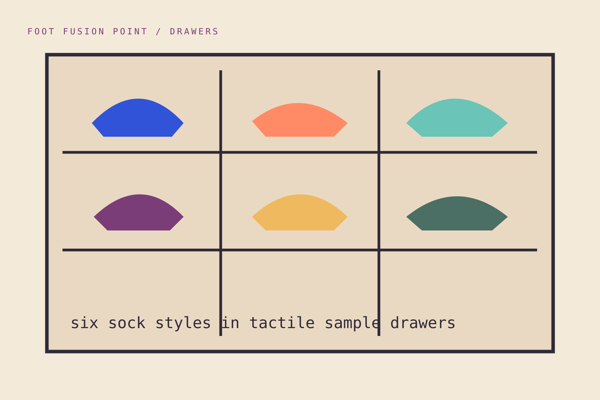

01
SYSTEM 01 / EVERYDAYEveryday
Balanced comfort for ordinary routes.
Explore the related notes →SOCK INDEX / SIX SYSTEMS
Move beyond colour and height. Start with climate, shoe volume, activity and the way the foot meets pressure.

Balanced comfort for ordinary routes.
Explore the related notes →Temperature buffering with fine natural fibre.
Explore the related notes →Targeted hold, ventilation and abrasion strength.
Explore the related notes →Soft structure for home and recovery.
Explore the related notes →Low bulk, smooth finish and tailored proportion.
Explore the related notes →Wash, dry and repair for longer useful life.
Explore the related notes →